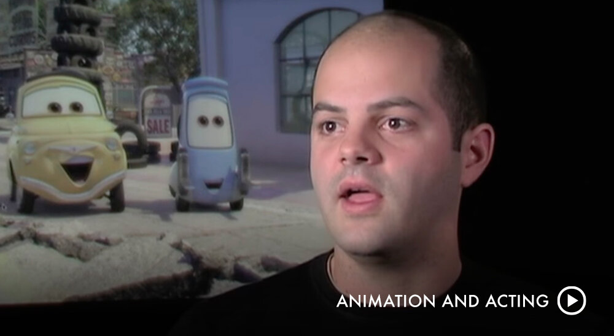
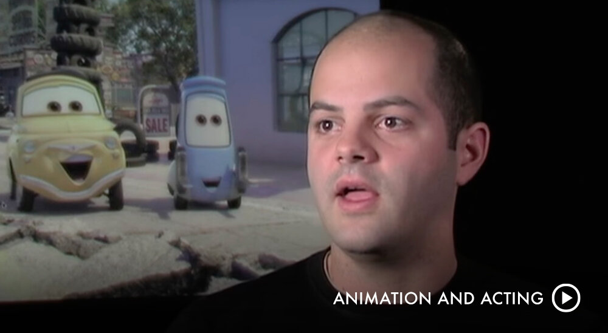
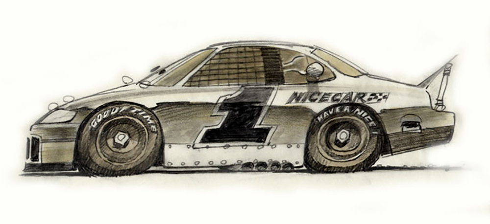
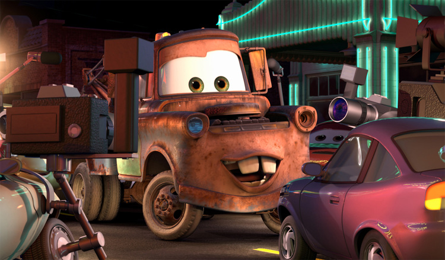
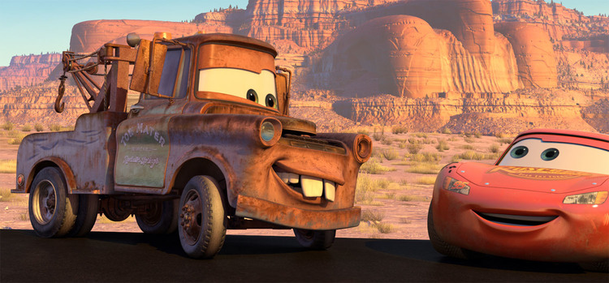

CARS
Aspiring champion race car Lightning McQueen is on the fast track to success, fame, and everything he's ever hoped for—until he takes an unexpected detour on dusty Route 66. His have-it-all-now attitude is thrown into a tailspin when a small-town community that time forgot shows McQueen what he's been missing in his high-octane life.
Trailers


CHARACTER DESIGN
Cars as Characters
The filmmakers wanted the cars to look and feel authentic, so that the audience would relate to them as characters. A hotshot racecar was the early choice for lead character Lightning McQueen, and a rusty real-life tow truck found off Route 66 came to life as Mater. The Pixar team chose other cars to reflect people they had met on the road during their research for the film.
 

Lightning McQueen
Lightning McQueen is a hotshot, rookie race car, poised to become the youngest car ever to win the Piston Cup Championship. He has just two things on his mind: winning and the perks that come with it. But when he in-advertently gets lost in the town of Radiator Springs, he meets a new group of friends who challenge him to reconsider the car he wants to be.
Mater
Mater is a good ol' boy tow truck with a big heart and a lovable laugh to match. Though a little rusty, he has the quickest towrope in Carburetor County and is always the first to lend a helping hand. He's the sweetest, most loyal guy in town and the first to befriend newcomer Lightning McQueen.
 Sally
Sally is a beautiful 2002 Porsche 911 from California who grew tired of life in the fast lane and made a new start in the small town of Radiator Springs. Charming, intelligent, and witty, she is the town's attorney and the car most dedicated to one day getting Radiator Springs "back on the map."

Doc Hudson
Doc Hudson is a 1951 Hudson Hornet, a quiet country doctor with a mysterious past. A cornerstone of Radiator Springs, Doc runs the local medical clinic and serves as the town judge. But when Lightning McQueen rolls through town, Doc's old competitive engine gets revved up once more.
WORLD DESIGN
Route 66
With a cast made entirely of cars, the world of Cars required a lot of road. Fast-track motor speedways would provide some of the pavement, but the story needed a sleepier locale. The filmmakers found it on Route 66, the fabled highway where American car culture took off in the 1950s. When the highway was replaced by the federal interstate system, hundreds of towns virtually fell off the map.
Radiator Springs
Memorable research trips along Route 66 led the Pixar team to create the town of Radiator Springs in a high desert setting somewhere between Gallup, New Mexico, and Kingman, Arizona, where towns of broken neon, peeling paint, and colorful denizens still exist. “We connected with the people and their towns and we really got it,” Co-Director and Story Supervisor Joe Ranft observed. “We found out that life out on that old highway is never predictable, and that is what makes the journey so much more memorable. We found the heartbeat of the Mother Road.”
AWARDS
-
ACADEMY AWARDS
NOMINATED FOR ANIMATED FEATURE FILM
JOHN LASSETER
-
NOMINATED FOR BEST ANIMATED EFFECTS
KEITH KLOHN
ERDEM HAMSI TAYLAN
-
NOMINATED FOR BEST CHARACTER ANIMATION
IN A FEATURE PRODUCTION
CARLOS BAENA
BOBBY PODESTA
-
NOMINATED FOR BEST DIRECTING IN AN
ANIMATED FEATURE PRODUCTION
JOHN LASSETER
-
NOMINATED FOR BEST PRODUCTION DESIGN IN AN
ANIMATED FEATURE PRODUCTION
WILLIAM CONE
CREDIT
-
DIRECTED BY
JOHN LASSETER
-
CO-DIRECTED BY
JOE RANFT
-
PRODUCED BY
DARLA K. ANDERSON
CAST
-
LIGHTNING MCQUEEN
OWEN WILSON
-
DOC HUDSON
PAUL NEWMAN
-
SALLY CARRERA
BONNIE HUNT
-
MATER
LARRY THE CABLE GUY